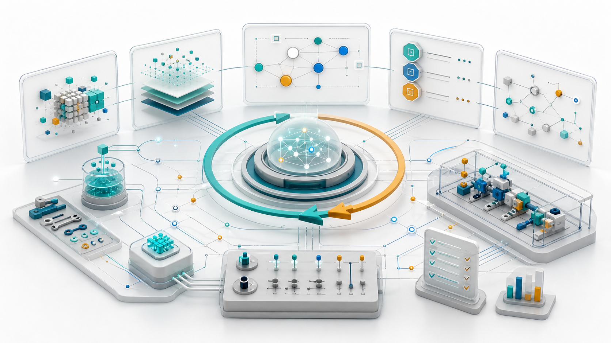

从 Prompt 工程到 Agent Loop：Agent 工程范式的六层演进
Prompt 工程、上下文工程、MCP、Skills、Harness 和 Agent Loop 不是彼此替代的流行词，而是一条逐层增强的工程链路：从“让模型答得更好”，走向“让智能系统可行动、可复用、可验证、可收敛”。

一张图看懂这条演进链
这不是一组横向概念，而是一套逐步补齐系统能力的路线：先把指令说清楚，再把材料组织好，然后连接外部世界，沉淀可复用技能，最后用验证环境驱动循环收敛。
1. 为什么这条链路成立
早期使用大模型时，工程重点集中在 Prompt：怎样写角色、怎样给示例、怎样限定格式、怎样减少歧义。随着模型能够使用工具、处理长上下文、执行多步任务，问题逐渐变成：模型知道哪些信息？可以调用什么系统？能否复用团队流程？执行结果如何验收？失败之后是否能自我修正？
因此，Agent 工程不是“Prompt 工程过时了”，而是 Prompt 被放进了更大的系统结构里。Prompt 仍然重要，但它只负责“表达意图”；真正的生产系统还需要上下文选择、工具协议、技能封装、评测环境和循环控制。
早期用法：把模型当回答器
- 一次 Prompt 承担所有表达、背景和约束。
- 结果主要靠人工阅读判断好坏。
- 失败后靠重新提问，而不是系统性反馈。
Agent 工程：把模型放进系统
- 上下文、工具、技能和验证环境分工明确。
- 每轮行动都有观察、trace 和验收信号。
- 失败会进入下一轮计划，直到通过或停止。
2. 六层能力模型
读这张表的方式
每一层都不是“新名词”，而是在回答一个工程问题：当 Agent 要在真实系统里行动时，哪些能力必须从 Prompt 里拆出来，变成独立、可维护、可验证的模块？
| 层级 | 核心问题 | 主要产物 | 失败信号 |
|---|---|---|---|
| Prompt 工程 | 如何让模型理解一次任务？ | 指令、约束、示例、输出格式、评分口径。 | 回答跑偏、格式不稳、需要反复追问。 |
| 上下文工程 | 模型当前应该知道什么，不应该知道什么？ | 检索策略、上下文包、摘要、记忆、状态压缩。 | 上下文污染、遗漏关键事实、长上下文里注意力漂移。 |
| MCP | Agent 如何标准化连接外部系统？ | MCP server、tools、resources、prompts、权限策略。 | 工具接入碎片化、重复适配、权限和数据边界混乱。 |
| Skills | 如何把专家经验变成可复用能力？ | SKILL.md、参考材料、脚本、模板、检查清单。 |
每次都要重新解释流程，团队最佳实践无法稳定复用。 |
| Harness | 如何判断 Agent 做得对不对？ | 测试环境、fixture、eval、trace、回放、CI、沙箱。 | 只能凭感觉验收，无法复现失败，改动没有回归保护。 |
| Agent Loop | 如何让系统自动逼近目标？ | 计划器、执行器、观察器、评分器、反思机制、停止条件。 | 无限循环、成本失控、为通过测试而破坏真实目标。 |
3. Prompt 工程：单次指令的质量控制
Prompt 工程解决的是最基础也最容易被低估的问题：把人的意图转换为模型可执行的任务描述。OpenAI 的提示工程材料强调清晰指令、充足上下文、示例、输出格式和迭代改写，这些仍然是 Agent 系统的地基。
Prompt 像一份任务合同
它不只是“请你帮我做 X”，而是把目标、约束、交付格式和验收标准写进同一个任务边界。Agent 后续可以调用工具和技能，但最初的方向仍然来自这份合同。
Prompt 负责什么
定义角色、任务、约束、输入输出、判断标准和禁止事项。它是模型单次推理的“任务合同”。
Prompt 不负责什么
它不应该承担长期记忆、工具权限、环境状态、测试执行和失败回滚。这些需要后续几层系统能力接管。
一个工程化 Prompt 通常包含：
1. 任务目标：要完成什么
2. 上下文边界：可以参考哪些信息
3. 操作约束：哪些事情不能做
4. 输出格式：用什么结构交付
5. 验收标准：什么情况算完成
6. 失败策略：不确定时如何处理4. 上下文工程：把正确材料放进工作记忆
上下文工程把问题从“怎么写一句好 Prompt”推进到“模型推理时到底看到了什么”。Anthropic 对 context engineering 的定义强调：它是围绕 LLM 推理时 token 集合的策展和维护，包括 Prompt 之外进入上下文的一切信息。
这对 Agent 尤其关键，因为 Agent 会经历多轮工具调用、日志观察、局部失败、状态更新和任务拆解。如果上下文不断堆叠，系统会出现“越做越糊”的现象；如果上下文过度裁剪，又会丢掉关键线索。
上下文不是资料仓库
更像一个动态工作台：每轮只摆出当前需要的材料，把旧记录压缩成状态，把失败线索保留下来，把无关噪音移出视野。
| 上下文动作 | 工程含义 | 典型实现 |
|---|---|---|
| 选择 | 让模型看到最相关的文件、需求、日志和历史决策。 | 检索、引用追踪、依赖图、代码索引。 |
| 压缩 | 把长历史变成结构化摘要，同时保留决策依据。 | 状态摘要、任务卡片、失败记录、变更日志。 |
| 隔离 | 避免不同子任务互相污染，降低注意力漂移。 | 子 Agent 独立上下文、按模块拆包、只读参考包。 |
| 更新 | 让观察结果、测试失败和人工反馈进入下一轮。 | trace、memory、scratchpad、issue log。 |
5. MCP：把外部世界标准化接进来
MCP，也就是 Model Context Protocol，是把 AI 应用连接到外部系统的开放标准。官方规范把 server 能提供的能力分为三类：Resources 提供上下文和数据，Prompts 提供模板化消息和工作流，Tools 提供可执行函数。
在 Agent 工程里，MCP 的价值不是“又一种插件格式”，而是把工具接入从项目私有适配，推进到可发现、可描述、可授权、可复用的协议边界。一个 Agent 不需要为每个 SaaS、数据库、文件系统单独发明接法，而是通过 MCP client 发现和调用 server 暴露的能力。
Agent Host
└─ MCP Client
├─ MCP Server: GitHub
│ ├─ resources: issues, PRs, files
│ ├─ prompts: release-note workflow
│ └─ tools: create_issue, comment_pr
├─ MCP Server: Database
│ └─ tools: query, explain_plan
└─ MCP Server: Internal Docs
└─ resources: policies, specs, runbooks6. Skills：把组织经验沉淀成可调用能力
如果 MCP 解决“Agent 能连什么”，Skills 解决“Agent 应该怎么做”。OpenAI Codex、Anthropic Claude 和 Agent Skills 社区对 Skills 的描述都很接近：一个 Skill 通常是包含 SKILL.md 的文件夹，里面可以放说明、脚本、模板、参考材料和资源。Agent 在任务相关时再加载完整技能，避免一开始就把所有流程塞进上下文。
Skills 的真正价值在企业内部会非常大。它可以把“资深工程师脑子里的流程”变成 Agent 可读、可执行、可分发的知识包。例如：如何发布一个版本、如何分析线上事故、如何写符合公司规范的 SQL、如何做安全审计、如何生成某种格式的客户报告。
| Skill 内容 | 作用 | 例子 |
|---|---|---|
| 说明文件 | 告诉 Agent 何时使用、如何执行、注意什么。 | SKILL.md 中的触发条件、步骤、限制。 |
| 脚本 | 把稳定操作交给确定性程序完成。 | 渲染文档、生成报表、批量校验、格式转换。 |
| 参考材料 | 提供领域规则和组织标准。 | 品牌规范、代码规范、合规要求、术语表。 |
| 模板 | 降低输出风格漂移。 | PR 描述模板、事故复盘模板、方案设计模板。 |
7. Harness：让 Agent 的结果可验证
Harness 可以理解为 Agent 的“工程试验台”：它不只是跑测试，还包括复现环境、样例数据、评测集、日志、trace、回放、权限沙箱、成本统计和人工验收入口。没有 Harness，Agent Loop 只能靠感觉收敛；有了 Harness，系统才能把失败变成下一轮可用的反馈。
OpenAI Evals、Anthropic 的 agent evals 与 long-running harness 文章、Inspect AI 和 SWE-bench 都指向同一个事实：评测不只是给模型打分，而是把“什么叫好”变成可运行的反馈机制。尤其在软件工程任务里，SWE-bench 这类基准强调真实 issue、可复现环境和一致的 evaluation harness，正好体现了 Harness 对 Agent 的约束意义。
Harness 的底层组件
环境初始化、fixture、测试命令、评测脚本、工具权限、日志和 trace、成本统计、结果报告。
Harness 的上层价值
把“模型觉得完成了”转换为“系统验证通过了”，并在失败时提供可定位、可回放的证据。
一个实用的 Agent Harness 至少回答这些问题：
1. 如何一键复现当前问题？
2. Agent 可以读写哪些资源？
3. 通过哪些测试或 eval 才算完成？
4. 每轮行为是否有 trace 和日志？
5. 失败样例是否会进入回归集？
6. 超时、超预算、危险操作如何停止？
7. 人类在哪些节点审批或接管？8. Agent Loop：从回答走向闭环行动
Agent Loop 是这条链路自然长出来的结果。当前面几层都存在时，Agent 不再只是“回答一次”，而可以持续执行：理解目标、制定计划、调用工具、观察结果、运行验证、反思失败、更新上下文，然后继续下一轮。
ReAct 论文提出把 reasoning 和 acting 交错进行，让模型一边推理一边通过行动获得外部观察。Reflexion 进一步强调，语言 Agent 可以从反馈信号中生成反思，并把反思放入记忆来改善后续尝试。Voyager 则展示了更长期的循环：自动课程、技能库和迭代 prompting 组合在一起，让 Agent 在环境反馈中积累可复用行为。
Agent Loop 不是无限循环
一个成熟的 Agent Loop 必须具备停止条件、预算控制、风险分级、回滚策略和人类接管点。否则它只是在自动消耗 token，甚至可能为了通过局部测试而破坏真实目标。
伪代码：
while budget.available():
context = build_context(task, memory, traces)
action = agent.plan_and_act(context, tools, skills)
observation = harness.observe(action)
score = harness.evaluate(observation, acceptance_criteria)
if score.passed:
return final_report(action, observation, score)
if score.requires_human or risk_too_high(action):
return ask_for_review(action, observation, score)
memory.add(reflect(observation, score))
return stop_with_partial_report(memory, traces)9. 可量化指标
如果把 Agent 工程当作企业能力建设，就不能只看“模型回答是否惊艳”。更可靠的指标应该覆盖速度、质量、成本、可复现性和人机协作效率。
| 指标类别 | 指标 | 解释 |
|---|---|---|
| 落地速度 | Idea to Demo Time、Idea to PR Time | 从想法到可运行原型或可 review 代码的时间。 |
| 上下文质量 | Context Relevance、Missing Context Rate | 给 Agent 的材料是否相关，关键材料是否遗漏。 |
| 工具可靠性 | Tool Success Rate、Permission Violation Rate | 工具调用是否成功，是否触发越权或危险操作。 |
| Skill 复用 | Skill Activation Accuracy、Workflow Reuse Rate | Skill 是否在正确任务中被调用，流程是否被团队复用。 |
| Harness 能力 | Reproducibility、Regression Catch Rate | 失败能否复现，回归问题能否被自动发现。 |
| Loop 收敛 | Loop Count to Pass、Human Intervention Rate | 达到验收需要几轮，需要多少人工介入。 |
| 生产风险 | Change Failure Rate、Post-deploy Incident Rate | Agent 交付是否引入线上故障或维护成本。 |
结论：Agent 工程的终点是可控收敛
这条链路可以压缩成一句话：Prompt 让模型理解任务，上下文让模型看见事实，MCP 让模型连接世界，Skills 让模型复用经验，Harness 让模型接受验证，Agent Loop 让模型在反馈中逼近目标。
真正的 Agent 工程能力，不是让模型多说几步推理，而是把不确定的生成能力放进一个可观察、可验证、可回滚、可持续改进的系统。
所以，Harness 到 Agent Loop 是一个分水岭。前面几层主要是在增强模型的输入和能力边界；后面开始进入控制系统思维：每次行动都要有观测，每次失败都要能学习，每次通过都要能复现，每次放权都要有边界。
参考资料
- PromptOpenAI, Prompt engineering；OpenAI Help Center, Best practices for prompt engineering with the OpenAI API。
- ContextAnthropic, Effective context engineering for AI agents。
- MCPModel Context Protocol, Introduction；Specification 2025-06-18；Tools。
- MCPAnthropic, Introducing the Model Context Protocol。
- SkillsOpenAI Developers, Agent Skills - Codex；Claude API Docs, Agent Skills。
- SkillsAnthropic, Equipping agents for the real world with Agent Skills；Agent Skills, Overview。
- AgentsOpenAI API, Agents SDK；OpenAI Agents SDK, Agents；Tracing。
- WorkflowAnthropic, Building Effective AI Agents。
- EvalsAnthropic, Demystifying evals for AI agents；Effective harnesses for long-running agents。
- EvalsOpenAI, openai/evals；OpenAI API, Working with evals；Inspect AI, Inspect AI documentation。
- HarnessSWE-bench, Overview；The Harness；SWE-bench, Leaderboards；OpenAI, Introducing SWE-bench Verified。
- LoopYao et al., ReAct: Synergizing Reasoning and Acting in Language Models；Google Research, ReAct overview。
- LoopShinn et al., Reflexion: Language Agents with Verbal Reinforcement Learning。
- SkillsWang et al., Voyager: An Open-Ended Embodied Agent with Large Language Models；Voyager project, project site。
- HITLLangChain Docs, Human-in-the-loop；LangGraph Docs, LangGraph overview。